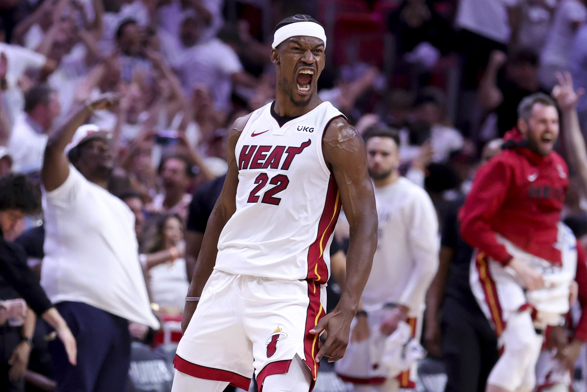
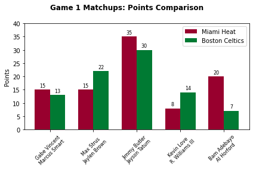
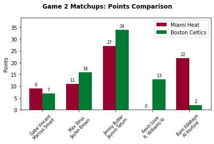

by serg

The first two games of this Eastern Conference Finals series between the #2 Boston Celtics and the #8 Miami Heat have been stunning, with the Heat emerging as the victors in both games, which gives them a crucial 2-0 lead in the series.
Analyzing both games, we can see a few common threads. The Heat's veteran Jimmy Butler is proving his worth as he scored 35 and 27 points in the first two games, respectively. Moreover, he is also proving to be an essential playmaker and a threat on the defensive end, with significant contributions in assists, steals, and rebounds. Bam Adebayo also stepped up, especially in Game 2, with a near triple-double performance of 22 points, 17 rebounds, and 9 assists.


Miami's bench, especially Caleb Martin and Duncan Robinson in Game 2, proved critical, with significant contributions in points, which helped keep the team ahead. The data shows that Miami's depth could be a vital factor in the series going forward.
Also, on the topic of the Heat's bench, NBA Twitter would want you to believe that Jimmy is on the verge of a spinal fracture from singlehandedly carrying this team on his back—but I disagree. Sure, Miami mainly would not be on this extraordinary playoff run if not for Jimmy Butler spearheading it. Still, I think they are where they are now because of glimpses of peak Kyle Lowry and peak Kevin Love and heavy impacts from the supporting cast.
For the Celtics, Jayson Tatum has been reliable, but only up until Q4, with his lack of field goals in the quarter in both games has been more than costly. And Jaylen Brown, a key contributor, seems to have struggled in Game 2 with a shooting efficiency that is less than ideal. The Celtics' bench also contributed less than the Heat's, which proved to be a difference-maker.
Another critical factor that stands out from the statistics is the turnover rate. The Celtics had a higher turnover rate in both games, giving up crucial possessions. If you watched those games, especially Game 1, Miami made Boston pay as they had a higher steals count in this series opener.
A final note would be the "surprising" performance of the Heat as the eighth-seed team. Historically, lower seeds tend to struggle against higher-seeded opponents—when the Heat upset the Bucks earlier this postseason, they were just the sixth team in NBA history to ever accomplish that feat—but so Miami is challenging this norm, proving that playoff seeding is just a number.
Looking ahead, the Celtics will need to find an answer for Jimmy Butler and look for ways to limit turnovers. Boston absolutely needs more consistent contributions from the bench and needs to work on closing out games stronger, particularly Tatum in the 4th quarter.
For the Heat, continuing to leverage their depth will be beneficial. Maintaining defensive pressure to keep up the steal rate and capitalizing on Celtics' turnovers can help them extend their lead in the series.
The series now moves to Miami for the next two games, and it will be intriguing to see how the Celtics respond to this challenge and whether the Heat can maintain their current form.
In case you care about my takes on basketball, sign up: